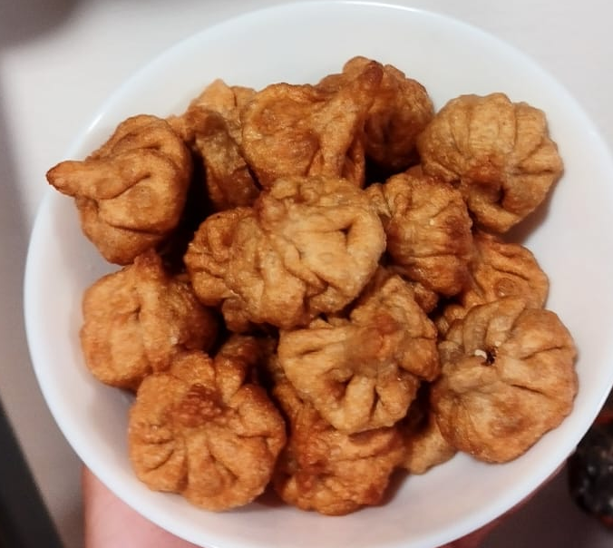

Delicious Modak
By- Vaishnavi.S
Story :
- My dish looks similar to morden momos nowadays, but actually it is called Modak which is around 200 BCE old.
This dish is usually made when there is a religious festival in India called Ganesh Chaturthi.
It is served as a sweet offering to lord ganesha.
This is a healthy sweet dish, as its made of all the healthy ingredients with no unhealthy or preservatives added
which means that kids will love to eat because its sweet and you won't worry because it is very healthy 😉.
Ingredients :
- For Modak Covering
- 2-3 cups of oil for deep frying
- 1/4th cup whole wheat flour
- 1/2 cup milk or as required
- 1.5 tbsp warm clarified butter (ghee) or oil
- salt as per taste
- For Modak Stuffing
- 1.5 tbsp clarified butter (ghee) or oil

- 1.5 tsp white sesame seed (safed til)
- 1.5 tsp poppy seed (khus khus)
- 1 cup fresh grated coconut (nariyal)
- ½ cup powdered Or grated jaggery 1 tbsp oil
- 1 t/s cardamom powder
- 1 t/s nutmeg powder
Instructions :
- Combine all the flour and mix with milk and add salt as per taste.
Start kneading into a smooth dough. Towards the end add warm
ghee or oil. Allow the dough to rest for 10-15 mins.

- In the meanwhile, let�s make our filling.
- Take a heavy bottomed pan, add ghee to it. Place on low heat and
sauté poppy seed and sesame seed for 40-60 secs.
- Add fresh grated coconut and powdered jaggery. Combine all nicely.
- Keep stirring the mixture for 2-3 mins. Jaggery would melt, the
mixture would leave a nice aroma. Ensure you don�t overcook the
mixture else the jaggery might harden or get stiff which
is not good for your modak.
- Lastly, add cardamom and nutmeg powder. Mix nicely. Switch off
the gas and don�t overcook the mixture. Allow the mixture
to cool down.

- Make marble-sized balls from the dough. Dust some flour and roll them
into thin round discs. Just ensure the discs have no cracks.
Place some filling in the center.
- Start forming pleats or pinch the edges. You could make umpteen number
of pleats. I have only made 6 pleats.
- Deep fry or shallow fry the modak until golden brown or cooked from all
sides. Or you can steam them for 10 mins.
- Place them on an absorbent napkin to absorb excess oil (if fried).
- Serve the fried modaks warm or serve as an offering 😋.